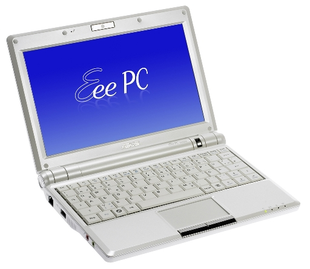

Wine
orLeaving Windows Behind? Bring your apps with you!
Dan Kegel
Cebit 2009
http://kegel.com/wine/cebit2009
DRAFT
Most people use Windows today...
but four trends are making it less important

Broadband adoption 30% in EU, 50% in US

Webmail now at 120 million daily users

Javascript suddenly fast enough for real apps

HTML 5 coming, will support offline apps


Cellphones with great web browsers selling like hotcakes
28% of mobile users already 3G (Source: comScore MobiLens)

MacOSX and the Macbook are insanely popular

Cheap netbooks are outselling iPhones